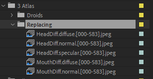
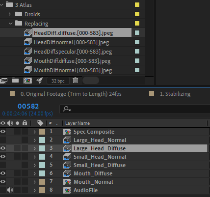
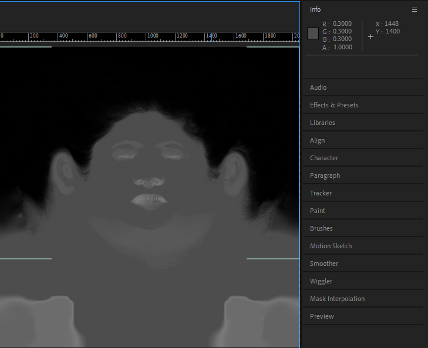
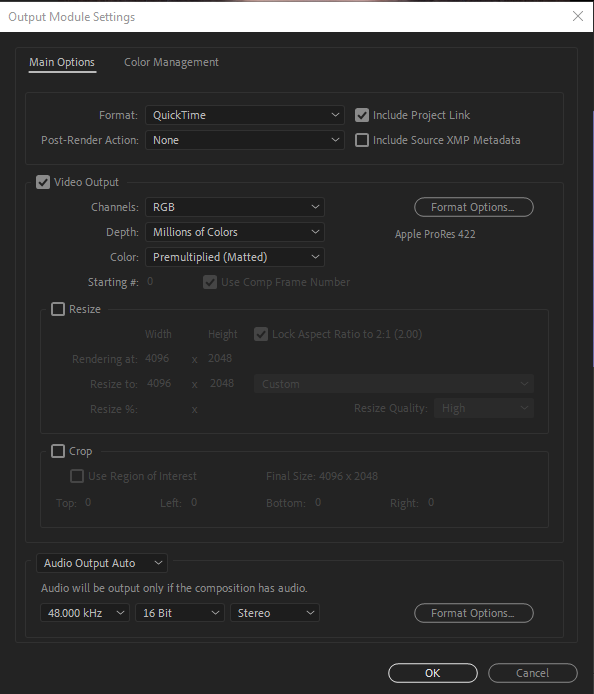
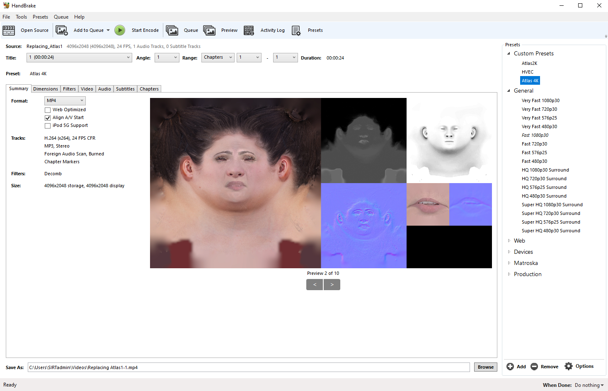
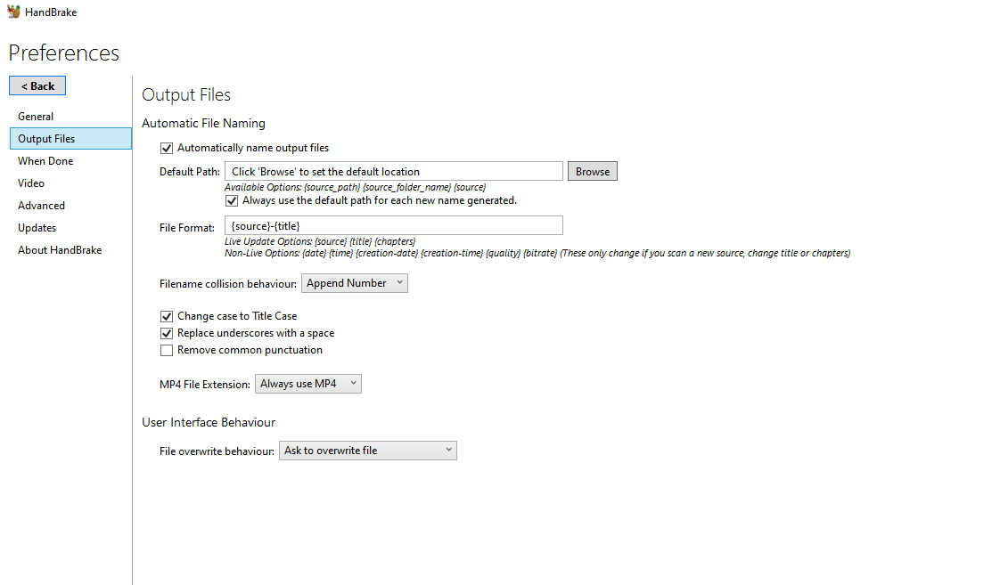
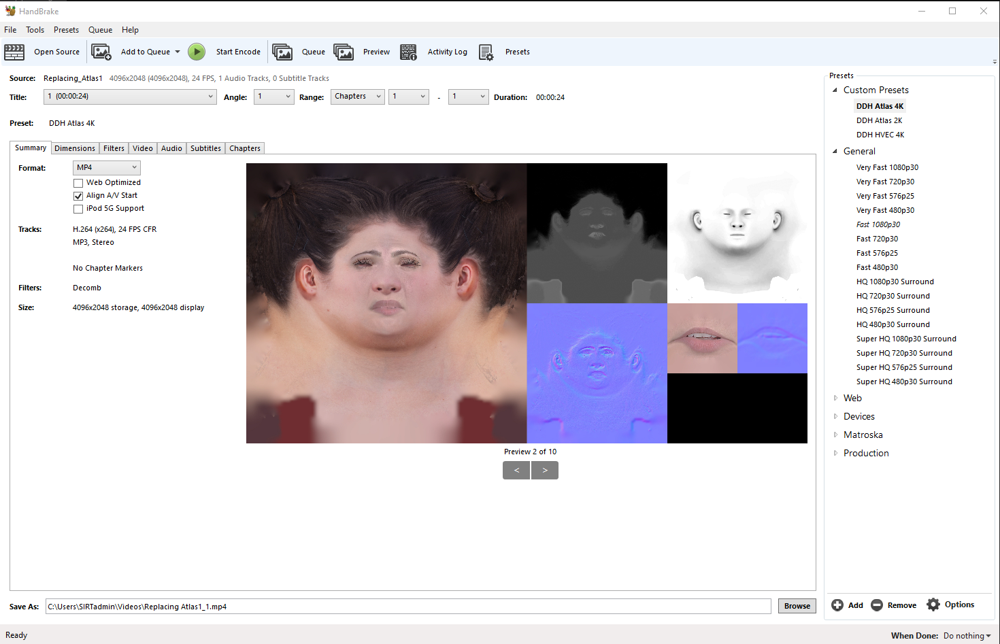
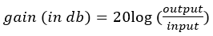
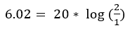
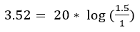

Dynamic Digital Humans Documentation
Atlas creation and export
This process creates an atlas video with audio from the retargeted and image processed facial projections for unity to animate with using the DDH After Effects Project. It also creates a compressed version of the video that optimizes performance during playback in Unity using the preferred H.264 compression.
1.1 Assemble reprojected images on an atlas
1. Open the DDH Image Processing template in After Effects and go to Render Atlas composition
i. Import image sequences created with the DDH Animation Project in Maya for the combined UV and projection Diffuse, Normal and Specular for the head and mouth texture maps
ii. Replace appropriate image sequence in scene template
a. Select image in template scene
b. Alt+select sequence in project window and drag over the same image in the scene window
1.2 Spec Composite
Fixes Spec colour to occlude the specular and light from the hairline and provides specular reflectance to the mouth and eye regions.
1. Navigate to the Spec Composite Compostion
2. Replace files that correspond to your new character
3. Adjust specularity for hair to become black and majority of the skin to have an average colour of 0.3 by using the info window (top right) as your source
1.3 Mouth Normal Composite
Blurs Mouth Normal to Soften sharp edges of teeth
1.Go to Mouth Normal composite
2. Blur normal map using the effects to remove any sharp edges
1.4 Render Atlas
Render either a Diffuse Large or Normal Large depending on your desired character output (We recommend using a large Normal as normal effects lighting information more clearly in real-time applications and has a potential to add more detail with lighting)
Recommended output settings
i. Quicktime
ii. Apple Prores 422
1.5 Compressing video for real-time playback
Uncompressed videos are sometimes large and require encoding and decoding for the game engine when playing back animations. By using Handbrake we can significantly reduce file sizes, while maintaining a relatively good video for playing back animated details with DDH characters.
Download Handbrake v1.3.2
NOTE
Handbrake is a tool for converting video from nearly any format to a selection of modern, widely supported codecs
Handbrake usage and DDH presets
Current preferred settings (2022.05.04)
For our demo scene example, 4K x 2K resolution is the recommended setting for mobile as far as quality to performance ratio. However there are many cases in which 4K will not be the best suited video resolution and may be adjusted to suit your own applications needs.
1. Import custom settings
i. Download DDH Custom Presets
ii. Go to Options > Import from file
iii. Use Presets > Custom Presets > DDHAtlas4k for VR
2. Change preferences
i. Change Output Files to .mp4
a. Go to Tools > Preferences > Output Files
b. Enable Always use MP4
3. Export Compressed Video
i. Select desired output (DDH Atlas 4k Recommended for Unity)
ii. Naming Covention
a. character_take_Atlas_1.mp4 (_1 denotes compressed Handbrake version)
Select Start Encode (eg. Laura_Replacing_Atlas_1.mp4)
1.6 Known Limitations (If not usign presets)
Video Playback (Constant vs Peak framerate)
When using constant frame rate, Handbrake will ensure that the entire video conforms to the specified frame rate. Although Handbrake does not recommend this setting in most typical uses, because the video frame rate is the driver for the animation for the character and we want reliable and predictable delivery of video data, a constant frame rate is preferred.
When using peak frame rate, Handbrake will use the specified frame rate as the highest potential frame rate for the video. Any sections of the video that fall below or at the specified frame rate will stay at those levels while simultaneously clamping sections that exceed the specified frame rate to the specified frame rate. This is Handbrake's preferred setting as it can be applied in most use cases (especially for general use HDR videos) but is not preferred in our case as we do not necessarily want a lower frame rate (it can result in poorer quality/character fidelity) nor a higher frame rate (it can transfer more data than expected in a given period and negatively affect performance (i.e. CPU via additional unexpected video buffering)).
1. There is a four video playback maximum (at the same time, there will be dropped frames in mobile)
i. This is regardless of the video resolution. Higher resolution than the recommended 4K videos at the same time puts significant load on the GPU and can affect the frame-rate of the experience.
2. No more than 2 x 4K performance videos should be played at a time.
3. No more than 8 x 2K performance videos should be played at a time
Using Apple codec/containers (.mp4)
| Resolution | Sub-4K | 4K | Dimensions | 2048 x 1024 (2K) | 4096 x 2048 | Video Codec | H.264 | H.265 | Container | .mp4 | .mp4 | Frame Rate | 24 | 24 | Audio Codec | AAC | AAC |
|---|
Audio Playback
Unless handled explicitly in Unity, multiple audio tracks in the texture atlas may prevent the Unity videoplayer from playing (typically occurs when trying to use a 4K m4v with more than 1 audio track). Thus, for general purposes, ensure that there is only 1 audio track in the resulting texture atlas video.
NOTE
If there is more than 1 audio track, delete the second track (typically added automatically by Handbrake as an HQ track)
Additionally, when encoding in Handbrake, the original video's audio may be affected by compression (i.e. the resulting audio will sound softer than the original video). To negate this effect, the gain must be adjusted. We have found that 2X output (think 2X volume… but not exactly) generally fixes any issues. If 2X output is too much or too little, refer to the appendix for the gain equation.
Gain
To find the gain necessary for double volume (loosely, output = 2):
To find the gain necessary for 1.5x volume (loosely, output = 1.5):
Handbrake only accepts integers for Gain.
Gain
Using H.264 to encode videos means living within a max of 4k resolution. Windows 8+, H.264 is supported up to 4096 x 2304 pixels. Windows 7 max is 1920x1088.
More information on codecs
H.265 - Unity supports the codec, but the user must install it on their own. The reason for this complexity around H.265 is licensing. Video codec technology is protected with patents/licenses, so when it's included in a product (OS, game, ...) must be licensed for your application.
VP8 codec - royalty free and works up to 16384 x 16384. But because Unity uses a software implementation, the performance may not match that of hardware-accelerated implementations for H.264/H.265. Android is an exception here, where many devices have a hardware implementation of vp8. Successors of vp8 (namely: vp9 and av1) are also something we have an eye on but haven't yet had time to dig into.
You'll be able to import 8K content (7680 x 4320) without trouble and get a feel whether the performance level is up to expectations.
Maximum Video Resolutions for Oculus Quest 2
- Monoscopic: Up to 8192 x 4096 @ 60 FPS 100 Mbit H.265 (HEVC) codec
- Stereoscopic: Up to 5760 x 5760 @ 60 FPS 100 Mbit H.265 (HEVC) codec
- 180 Side by Side: Up to 5760 x 5760 @ 60 FPS 100 Mbit H.265 (HEVC) codec
Since Oculus Quest is released with the XR2 chipset it is now finally possible to playback 8K 60FPS video without any frame drops. Since the display of the Oculus Quest 2 still has a limited pixel density we can also recommend a 7200×3600 @ 60 FPS 100Mbit H.265 (HEVC) video resolution since this leaves room for a little overhead when using spatial audio for example.